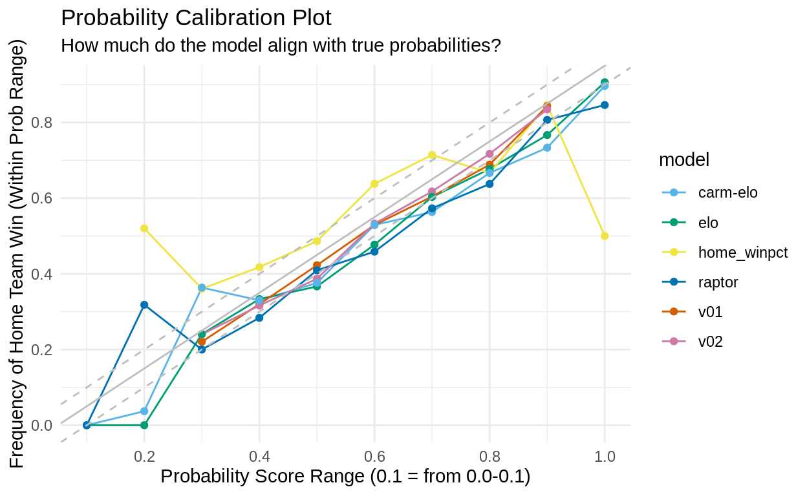
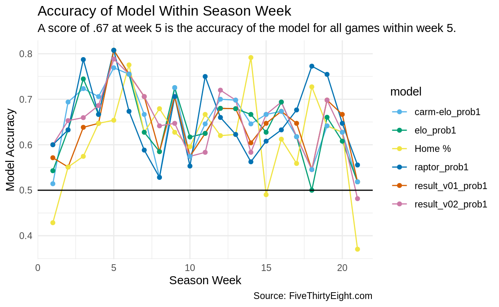
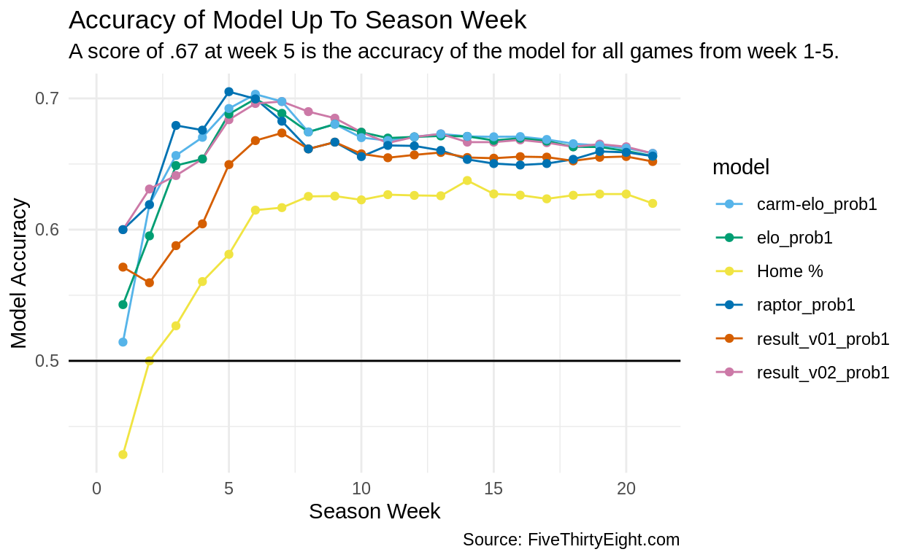
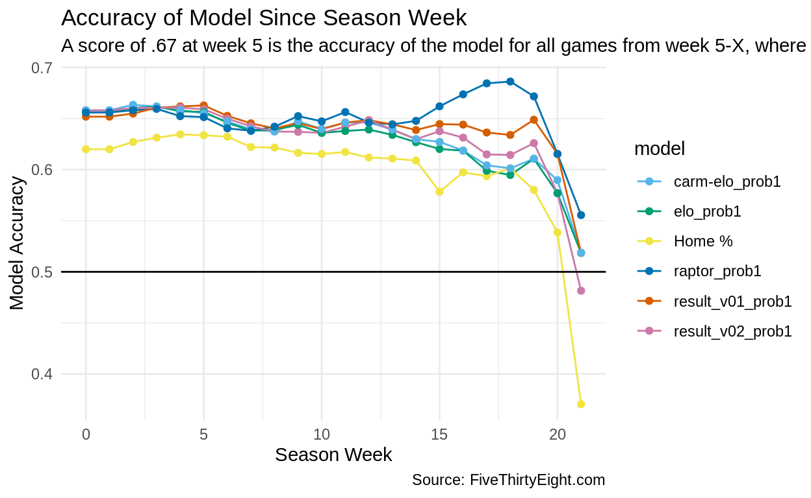

Comparing my models against FiveThirtyEight
Each morning I challenge FiveThirtyEight’s Raptor predictions1 and compare them against some super-simple benchmarks. Updated Tue, Apr 07 06:20 AM.
Upcoming games for the home team’s win probability. Blue represents an expected win for the home team (score > 50%) and orange/red represents an expected loss. elo is the FiveThirtyEight model and V02 is my model.
The home team win’s probability is colored green if the model correctly predicted the home team winning.
I estimate the team’s final record and compare that to FiveThirtyEight’s projections.
This section compares how accurate my models are with FiveThirtyEight’s.
| Home Team Benchmarks | |
| Win Rate | 0.551 |
| Home % | 0.620 |
| Home % > Away % | 0.637 |
| My Models | |
| v01 | 0.652 |
| v02 | 0.658 |
| Five Thirty Eight | |
| elo | 0.656 |
| carm-elo | 0.658 |
| raptor | 0.656 |
How well do the model’s predictions align with true probabilities? A prediction of 70% should win 70% of the time. You’d expect that if the model probability ranges between 40-50%, the home team should win 40-50% of the time. If the model probability ranges between 90%-100%, you’d expect the home team to win 90-100% of the time. Black line represents true probability




FiveThirtyEight’s predictions are updated daily and can be downloaded here: https://projects.fivethirtyeight.com/nba-model/nba_elo_latest.csv.↩︎